Участник несколько раз говорит, что не понимает, из-за чего стоит переживать и какие показатели расходятся.
уверенность: высокаяЭтап
00:00:55
Понять расхождение
00:02:06
Сопоставить показатели
00:02:53
Добавить самочувствие
00:03:39
Разобраться в объяснении
00:04:26
Выбрать нагрузку
00:04:46
Оценить результат
Речь участника
«Интересно было бы, конечно, увидеть, какие показатели не совпадают прямо сразу здесь, да, и почему они не совпадают.»
«Так, вот теперь мне показали, какие значения, что Garmin показывает 82, ну, вот опять же тоже можно догадаться, что из 100.»
«Жаль, что здесь не хватает какой-то шкалы между ниже обычного и как обычно.»
«Мне рассказывают про какие-то два технических файла, которые вообще ничего не говорят.»
«Я бы дальше, ну, наверное, поставил бы тренироваться по плану всё-таки.»
«Какое-то решение я принял, как-то я поменял своё решение — мне кажется, никак я не поменял, ничего не принял, ничего не произошло.»
Действие и экран
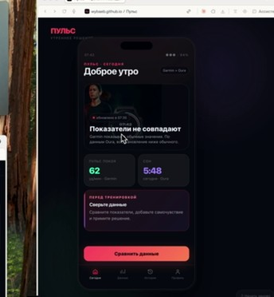
Рассматривает главный экран, пытается понять, какие именно показатели расходятся, затем нажимает «Сравнить данные».
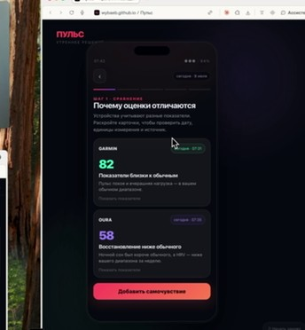
Сравнивает оценки Garmin и Oura, читает основания каждой оценки и соотносит их со своим состоянием.
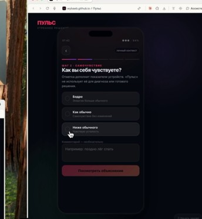
Выбирает вариант «Ниже обычного» и уточняет состояние в комментарии.
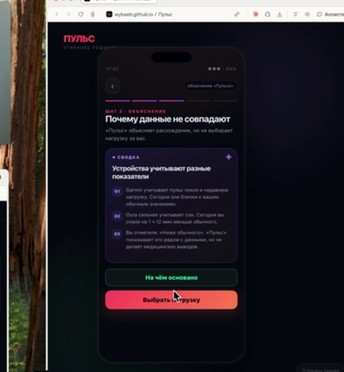
Читает, почему устройства дают разные оценки, затем открывает основания и оценивает полезность источников.
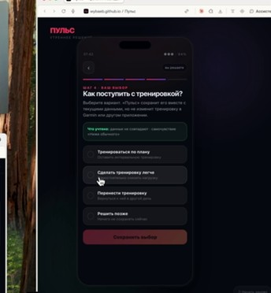
Просматривает варианты нагрузки и выбирает тренировку по плану.
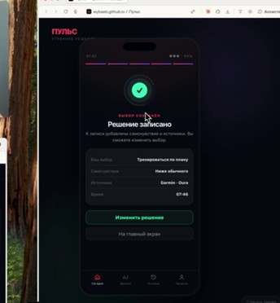
Просматривает сохранённое решение и оценивает, помог ли продукт принять его.
Лицо в моменте
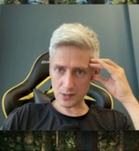
лицо найдено
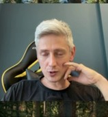
лицо найдено
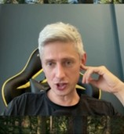
лицо найдено
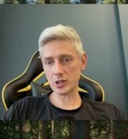
лицо найдено
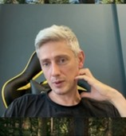
лицо найдено
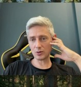
лицо найдено
Эмоциональная кривая
+20−2
-1
+0
-1
-2
+0
-2
Участник последовательно проговаривает значения и основания, одновременно уточняя для себя шкалу.
уверенность: высокаяНи один из предложенных вариантов не соответствует ощущению участника; он компенсирует это текстовым комментарием.
уверенность: высокаяУчастник называет экран с техническими источниками бессмысленным и сразу хочет перейти дальше.
уверенность: высокаяУчастник выбирает вариант, но сопровождает решение словами «наверное» и «всё-таки».
уверенность: высокаяУчастник прямо говорит, что не увидел результата обработки данных и не почувствовал изменения своего решения.
уверенность: высокаяИнсайты
- Сообщение о расхождении привлекает внимание, но на первом экране не хватает названий конфликтующих источников и причины различия.сказал участник
- Основное действие визуально отделено от объясняющей карточки, поэтому связь между сообщением и следующим шагом неочевидна.наблюдение исследователя
- Число 82 воспринимается как оценка из 100, но шкала не подписана — участнику приходится догадываться.сказал участник
- Собственное ощущение недосыпа заставляет участника меньше доверять высокой оценке Garmin.сказал участник
- Трёх вариантов недостаточно для промежуточного состояния между «как обычно» и «ниже обычного».сказал участник
- Участник не понимает, повлияет ли его комментарий на рекомендацию продукта.сказал участник
- Объяснение разных фокусов Garmin и Oura понятно участнику.наблюдение исследователя
- Технические имена источников не помогают оценить надёжность объяснения.сказал участник
- Участник завершает выбор, хотя не формулирует, как предыдущие данные изменили его решение.наблюдение исследователя
- Итоговый экран подтверждает сохранение выбора, но не показывает совокупный результат анализа.наблюдение исследователя
- Участник ожидает интегральный recovery-индекс по данным устройств и самочувствию.сказал участник
Что изменить
- На первом экране назвать Garmin и Oura, кратко показать, в чём расходятся их оценки, и связать это сообщение с кнопкой сравнения.вывод исследователя
- Подписать шкалы и единицы измерения, а ключевые основания каждой оценки поставить рядом с числом.вывод исследователя
- Добавить промежуточное значение или шкалу и рядом с комментарием объяснить, как он будет использован.вывод исследователя
- Показывать человекочитаемые названия данных и коротко объяснять, что подтверждает каждый источник; технические детали убрать во второй уровень.вывод исследователя
- Перед подтверждением кратко показать, какие данные и отметка самочувствия поддерживают выбранную нагрузку.вывод исследователя
- На итоговом экране показать объединённую оценку восстановления, вклад каждого источника и влияние данных на выбранную нагрузку.вывод исследователя